The map container DIV object, which is placed within an application web page as shown in the simple example here , is where all the map contents are displayed. It is also where all the user interactions happen. Internally, map contents are organized in a layered fashion, as illustrated in the following diagram.

There are five different types of map content layers. Listed in the display order from bottom to top, they are:All the layers except the fixed figures layer will move as a whole whenever the user drags the map. These movable layers are automatically updated and realigned by the client library when the map is dragged or zoomed. The fixed figures layer will never be moved; as such it is the ideal place for map pieces such as scale bar, map legend, copyright text, etc. Note that for the first two layer types (base map tiles and theme based FOI), you can have multiple layers of each type.
- base map tiles layer
- theme based FOI layer
- user defined (individual) FOI layer
- info window layer
- fixed figures layer
The following sections explain each type of map layer in details.
A typical Oracle Maps application has at least one base map layer that displays a background map. A base map layer is always associated with a (server-side) map cache instance, which is a cache of rendered map image files. A map cache instance, in turn, is typically associated with a MapViewer base map for a specific set of zoom levels. So for instance you can create a map cache instance for the base map named DEMO_MAP in the mvdemo schema. This map cache will now manage map tiles of DEMO_MAP for all specified zoom levels.
Map tiles are fixed-size map image files that cover a small, pre-determined area of the overall map coverage. The Oracle Maps client displays a base map layer by stitching together multiple adjacent map tiles inside a browser window.
Note that when associated with a MapViewer base map, the map image tiles in a map cache instance are generated by MapViewer using its own rendering engine. You can however create a map cache instance to cache map tiles generated by an external (non-MapViewer) map provider, such as a WMS service.
When multiple base map layers from different Map Cache instances are included, they must all have the same coordinate system and zoom-level definitions. Coordinate system and zoom-level definitions are specified when you first create a new map cache instance.
Theme based FOI layers display Features of Interest that respond to mouse rollover with tool-tip like info window. As implied by its name, a theme based FOI layer is always associated with a MapViewer theme (predefined or dynamically created).
When a theme based FOI layer is to be displayed, the Oracle Maps client will ask the MapViewer server to process the associated theme. The MapViewer server will query the database using the current viewing window as a filter, fetch and render each individual record in the result set, and send back the rendered FOI images and any associated attributes to the Oracle Maps client. You can access the attributes of each FOI using the JavaScript API, and even customize the info-tip window for each FOI layer based on such attributes.
User defined FOI layer displays individual, dynamically created Features Of Interest. For instance, you may have a geometry that represents the optimal route from point A to B that is obtained from an external routing service. To place this geometry on the map you will need to create an individual FOI based on its coordinates.
Other FOIs, such as hand drawn geometries resulted from a red-lining session, are also placed in this layer.
An info window is a small pop-up window that displays customizable content in the map. It is typically associated with FOIs, but you can also add your own info window anywhere on the map with any desired HTML contents. All info windows, when displayed, are placed inside a layer directly above the user defined individual FOI layer.
The topmost layer contains fixed figures, which are immovable elements such as copyright notes, scale bar and navigation panel.